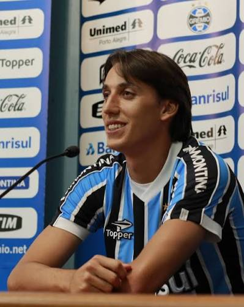

Geromel
Zagueiro experiente e líder da defesa do Grêmio.
Um site para falar sobre o Grêmio
O Grêmio Foot-Ball Porto Alegrense, mais conhecido como Grêmio, é um clube de futebol brasileiro sediado na cidade de Porto Alegre, no estado do Rio Grande do Sul. Fundado em 15 de setembro de 1903, o Grêmio é um dos clubes mais tradicionais e bem-sucedidos do futebol brasileiro, com uma rica história de conquistas nacionais e internacionais.
O Grêmio é conhecido por sua torcida apaixonada, conhecida como "Geral do Grêmio", que apoia o time em todos os momentos. O clube possui uma grande rivalidade com o Sport Club Internacional, outro clube de Porto Alegre, e os confrontos entre as duas equipes são conhecidos como "Grenal".
A história do Grêmio é marcada por momentos de grandeza e conquistas. O clube foi fundado em 15 de setembro de 1903, e desde então tem se destacado no cenário do futebol brasileiro.
O Grêmio é conhecido por suas conquistas no futebol brasileiro e internacional. Alguns dos principais títulos do clube incluem:

Zagueiro experiente e líder da defesa do Grêmio.
Atacante talentoso e um dos principais jogadores do Grêmio.
O Grêmio possui uma rica história de conquistas, tanto em competições nacionais quanto internacionais. Alguns dos principais títulos do clube incluem: